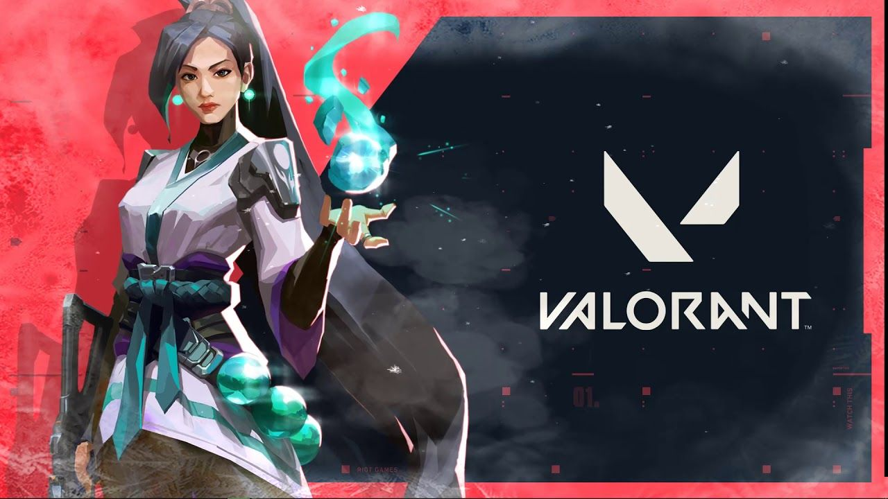
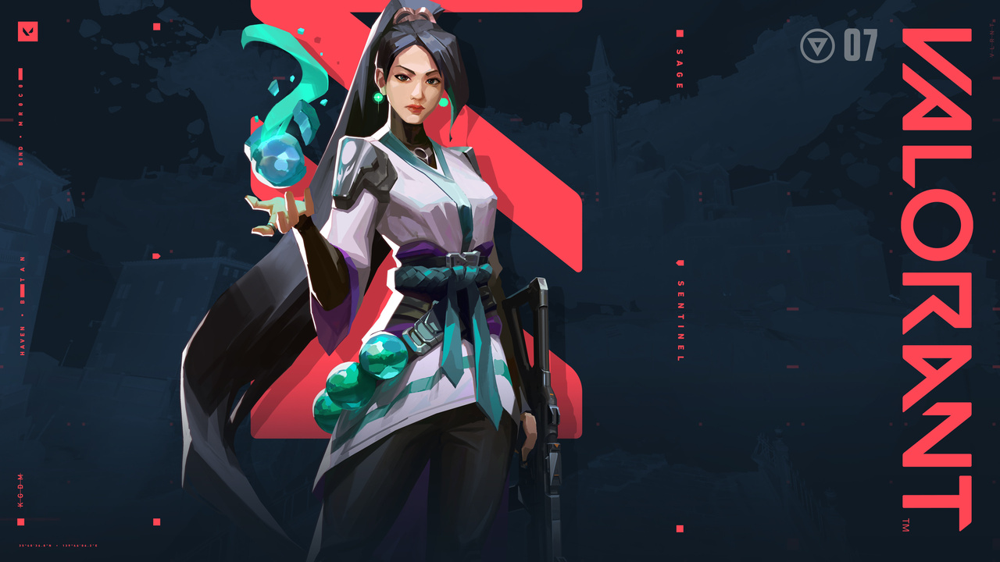
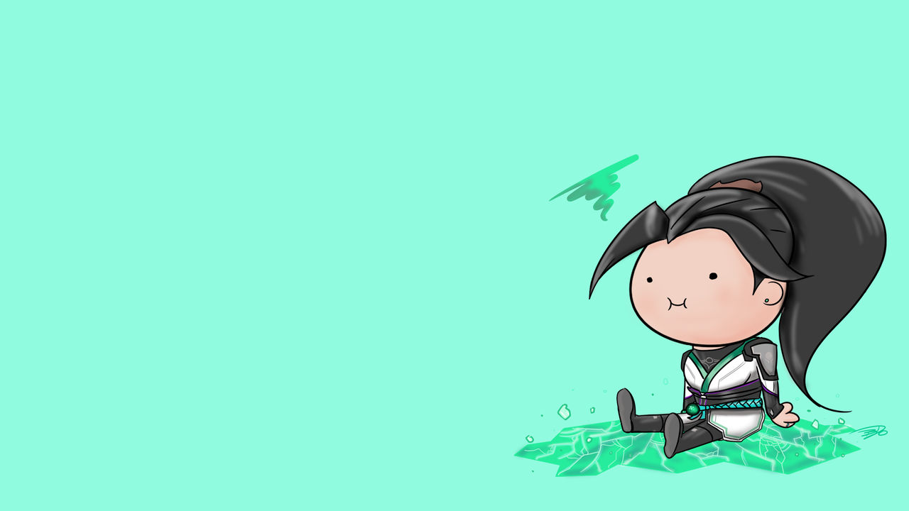

SAGE
- 

- 
- 
Biografia.
Originaria de China, Sage destaca a la hora de crear espacios seguros para su equipo allá donde va. Sus capacidades especiales para revivir a compañeros caídos en batalla y para mantener a raya los asaltos enemigos la convierten en la calma en mitad de la tormenta para su equipo.
Rol
Sage es una centinela,a diferencia de Kj y otros centinelas que tienen utilidades mas agresivas sage tiene habilidades mas "pasivas" que profundizaremos mas adelante.
Habilidades.
ORBE DE RALENTIZACIÓN-Q
Equipa una Orbe que al lanzarla y chocar contra el suelo genera un hielo que relentiza.
ORBE DE SANACIÓN-E
Sage equipa un orbe que puede curar al los aliados y a si misma.
ORBE BARRERA-C
Colaca un muero compuesto por 5 bloques que se pueden destruir.
RESURRECCIÓN-X
Sage puede revivir a un aliado.